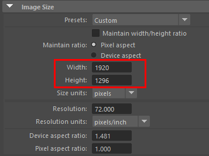
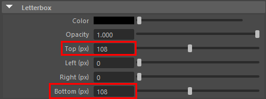
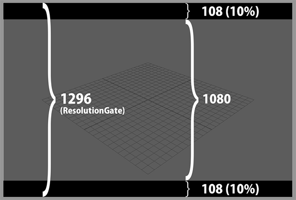
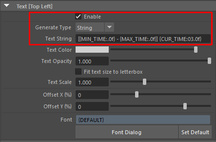
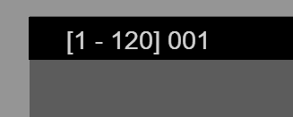
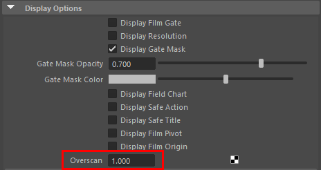
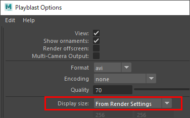

How to set up Letterbox¶
Overview¶
This section describes how to calculate the resolution and other settings when using letterboxes.
Letterboxes at the top and bottom of the screen at ResolutionGate’s
10%ratio.Here are the steps to output with Playblast.
Please create a RenderOverride node.
Process¶
First, check the “Resolution” in ResolutionGate
Basically, it is the resolution or its magnification at the time of final rendering.
In this case, we will use
1920 x 1080.
To add letterboxes to the top and bottom of the screen by 10%, we multiply the previous resolution height by
1.2.The result is
1296(px).
Set the ImageSize in RenderSettings to the resolution you just set (
1920 x 1296)(The resolution setting is necessary because the position of the letterbox is based on ResolutionGate)
Set the Top and Bottom attributes of the RenderOverride node’s letterbox to
108respectivelyThe width of the letterbox is calculated based on the resolution value in the RenderSettings.
Based on the value of
1296, the letterboxes will be displayed in108increments above and below(* based on ResolutionGate height ratios)
Enter the text you want to display in the
Text Stringattribute of the RenderOverride node and see if the text appears on the letterbox.Set the
Fit text size to letterboxattribute to on if you want the text size to match the letterbox height.Adjust the
Text ScaleandOffsetattributes as needed.
Set the
Overscanattribute of the camera to1.This setting will crop the view with the ResolutionGate border during the playblast (without having to crop it with AfterEffects or other editing software).
Open Playblast options and set the “Display size” attribute to
From Render Settings.(Other options are at your disposal)¶
Click the
PlayblastorApplybutton in the options dialog to run PlayblastCheck the output video